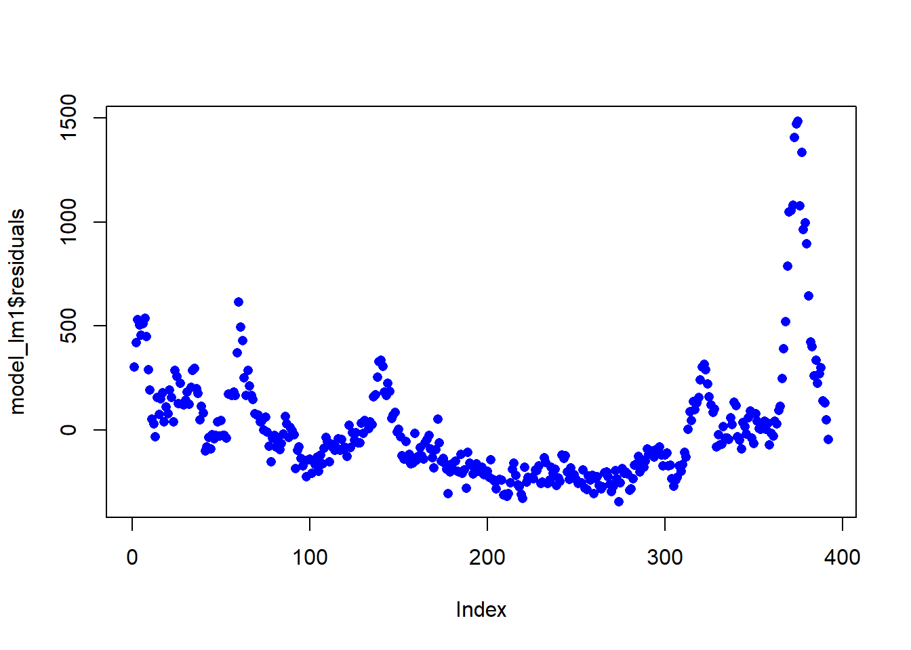
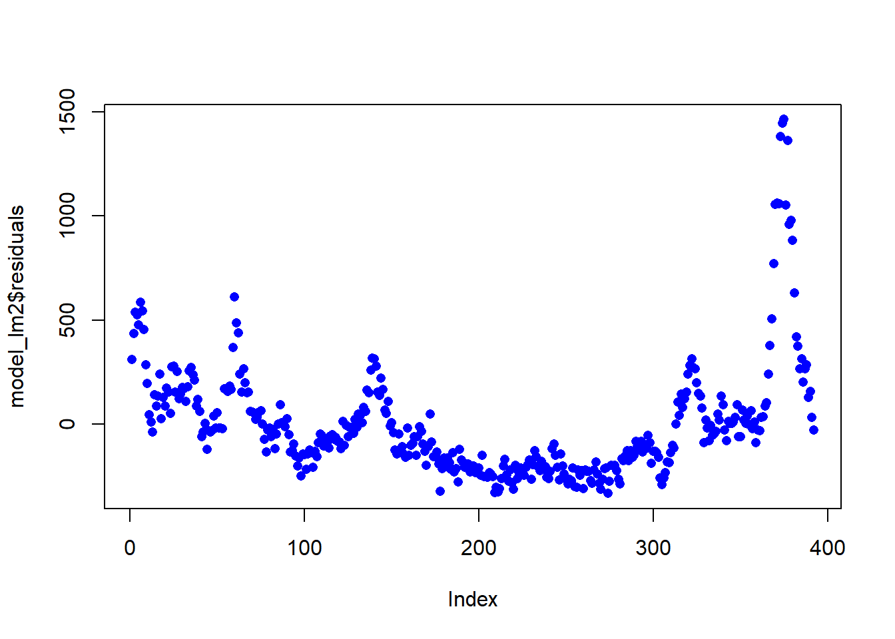
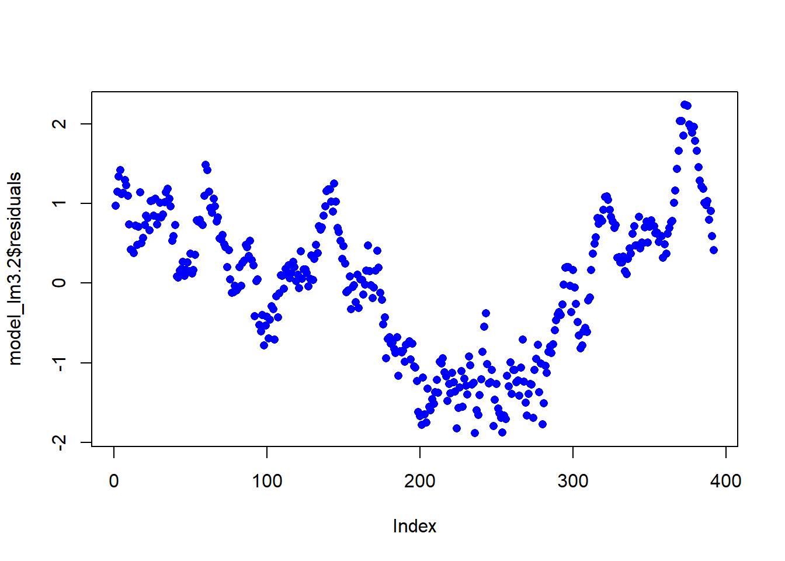

pacman::p_load(tidyverse, lubridate, caret)Prototyping Modules for Visual Analytics Shiny Application
dengue <- read_csv("../../Data/weekly_dengue_cases.csv")
weather <- read_csv("../../Data/clean_climate_data.csv", na = ".")weather_group <- weather %>%
group_by(Year, Month, Day) %>%
summarise(avg_daily_rainfall = mean(daily_rainfall, na.rm = TRUE),
max_highest_30m_rainfall = max(highest_30m_rainfall, na.rm = TRUE),
max_highest_60m_rainfall = max(highest_60m_rainfall, na.rm = TRUE),
max_highest_120m_rainfall = max(highest_120m_rainfall, na.rm = TRUE),
avg_mean_temp = mean(mean_temp, na.rm = TRUE),
max_max_temp = max(max_temp, na.rm = TRUE),
min_min_temp = min(min_temp, na.rm = TRUE),
avg_mean_wind = mean(mean_wind, na.rm = TRUE),
max_max_wind = max(max_wind, na.rm = TRUE))weather_group <- weather_group %>%
mutate('date' = make_date(year = Year, month = Month, day = Day)) %>%
mutate('wk_no' = isoweek(ymd(date)))weather_group_wk <- weather_group %>%
group_by(Year, wk_no) %>%
summarise(avg_daily_rainfall = mean(avg_daily_rainfall, na.rm = TRUE),
tot_daily_rainfall = sum(avg_daily_rainfall, na.rm = TRUE),
max_highest_30m_rainfall = max(max_highest_30m_rainfall, na.rm = TRUE),
max_highest_60m_rainfall = max(max_highest_60m_rainfall, na.rm = TRUE),
max_highest_120m_rainfall = max(max_highest_120m_rainfall, na.rm = TRUE),
avg_mean_temp = mean(avg_mean_temp, na.rm = TRUE),
max_max_temp = max(max_max_temp, na.rm = TRUE),
min_min_temp = min(min_min_temp, na.rm = TRUE),
avg_mean_wind = mean(avg_mean_wind, na.rm = TRUE),
max_max_wind = max(max_max_wind, na.rm = TRUE))dengue_weather_wk <- dengue %>%
left_join(weather_group_wk, by = join_by(Year == Year, WkNo == wk_no))# Remove the records with NA
dengue_weather_wk <- dengue_weather_wk[complete.cases(dengue_weather_wk),]
summary(dengue_weather_wk) Year WkNo Cases avg_daily_rainfall
Min. :2013 Min. : 1.00 Min. : 24.00 Min. : 0.000
1st Qu.:2015 1st Qu.:14.75 1st Qu.: 77.75 1st Qu.: 2.720
Median :2017 Median :27.00 Median : 229.50 Median : 5.148
Mean :2017 Mean :27.00 Mean : 291.68 Mean : 5.976
3rd Qu.:2019 3rd Qu.:40.00 3rd Qu.: 378.50 3rd Qu.: 8.486
Max. :2020 Max. :52.00 Max. :1792.00 Max. :27.621
tot_daily_rainfall max_highest_30m_rainfall max_highest_60m_rainfall
Min. : 0.000 Min. : -Inf Min. : -Inf
1st Qu.: 2.720 1st Qu.:20.55 1st Qu.: 24.15
Median : 5.148 Median :32.40 Median : 41.60
Mean : 5.976 Mean : -Inf Mean : -Inf
3rd Qu.: 8.486 3rd Qu.:40.00 3rd Qu.: 55.85
Max. :27.621 Max. :65.20 Max. :102.60
max_highest_120m_rainfall avg_mean_temp max_max_temp min_min_temp
Min. : -Inf Min. :24.56 Min. :31.0 Min. : 0.00
1st Qu.: 26.2 1st Qu.:27.53 1st Qu.:34.1 1st Qu.:22.10
Median : 46.4 Median :28.09 Median :34.7 Median :22.60
Mean : -Inf Mean :28.07 Mean :34.6 Mean :22.41
3rd Qu.: 64.0 3rd Qu.:28.68 3rd Qu.:35.2 3rd Qu.:23.10
Max. :122.8 Max. :30.09 Max. :37.5 Max. :24.80
avg_mean_wind max_max_wind
Min. : 5.442 Min. : 35.30
1st Qu.: 7.070 1st Qu.: 55.40
Median : 8.057 Median : 63.40
Mean : 8.348 Mean : 66.63
3rd Qu.: 9.255 3rd Qu.: 73.17
Max. :14.846 Max. :138.60 # Fit linear regression model using all the data without normalization
model_lm1 <- lm(Cases ~ tot_daily_rainfall + avg_mean_temp + avg_mean_wind, data = dengue_weather_wk)
summary(model_lm1)
Call:
lm(formula = Cases ~ tot_daily_rainfall + avg_mean_temp + avg_mean_wind,
data = dengue_weather_wk)
Residuals:
Min 1Q Median 3Q Max
-346.09 -182.45 -63.62 89.17 1482.23
Coefficients:
Estimate Std. Error t value Pr(>|t|)
(Intercept) -1966.268 619.150 -3.176 0.001614 **
tot_daily_rainfall 11.034 4.436 2.487 0.013298 *
avg_mean_temp 70.887 20.370 3.480 0.000559 ***
avg_mean_wind 24.191 9.785 2.472 0.013855 *
---
Signif. codes: 0 '***' 0.001 '**' 0.01 '*' 0.05 '.' 0.1 ' ' 1
Residual standard error: 279.6 on 388 degrees of freedom
Multiple R-squared: 0.03536, Adjusted R-squared: 0.0279
F-statistic: 4.741 on 3 and 388 DF, p-value: 0.002925plot(model_lm1$residuals, pch = 16, col = "blue")
# Fit linear regression model using all the data with log transformation on X
model_lm2 <- lm(Cases ~ log1p(tot_daily_rainfall) + log1p(avg_mean_temp) + log1p(avg_mean_wind), data = dengue_weather_wk)
summary(model_lm2)
Call:
lm(formula = Cases ~ log1p(tot_daily_rainfall) + log1p(avg_mean_temp) +
log1p(avg_mean_wind), data = dengue_weather_wk)
Residuals:
Min 1Q Median 3Q Max
-333.47 -186.03 -57.03 91.56 1463.74
Coefficients:
Estimate Std. Error t value Pr(>|t|)
(Intercept) -6736.23 1933.09 -3.485 0.000549 ***
log1p(tot_daily_rainfall) 70.50 26.61 2.649 0.008399 **
log1p(avg_mean_temp) 1865.22 545.64 3.418 0.000697 ***
log1p(avg_mean_wind) 280.52 101.07 2.776 0.005778 **
---
Signif. codes: 0 '***' 0.001 '**' 0.01 '*' 0.05 '.' 0.1 ' ' 1
Residual standard error: 279.1 on 388 degrees of freedom
Multiple R-squared: 0.0384, Adjusted R-squared: 0.03097
F-statistic: 5.165 on 3 and 388 DF, p-value: 0.001643plot(model_lm2$residuals, pch = 16, col = "blue")
# Fit linear regression model using all the data with log transformation on X and Y
model_lm3 <- lm(log1p(Cases) ~ log1p(tot_daily_rainfall) + log1p(avg_mean_temp) + log1p(avg_mean_wind), data = dengue_weather_wk)
summary(model_lm3)
Call:
lm(formula = log1p(Cases) ~ log1p(tot_daily_rainfall) + log1p(avg_mean_temp) +
log1p(avg_mean_wind), data = dengue_weather_wk)
Residuals:
Min 1Q Median 3Q Max
-1.8333 -0.7985 0.1532 0.6327 2.2185
Coefficients:
Estimate Std. Error t value Pr(>|t|)
(Intercept) -17.51166 6.43010 -2.723 0.006753 **
log1p(tot_daily_rainfall) 0.12567 0.08852 1.420 0.156485
log1p(avg_mean_temp) 6.22667 1.81497 3.431 0.000667 ***
log1p(avg_mean_wind) 0.71565 0.33618 2.129 0.033905 *
---
Signif. codes: 0 '***' 0.001 '**' 0.01 '*' 0.05 '.' 0.1 ' ' 1
Residual standard error: 0.9284 on 388 degrees of freedom
Multiple R-squared: 0.0362, Adjusted R-squared: 0.02874
F-statistic: 4.857 on 3 and 388 DF, p-value: 0.002497model_lm3.1 <- lm(log1p(Cases) ~ log1p(avg_mean_temp) + log1p(avg_mean_wind), data = dengue_weather_wk)
summary(model_lm3.1)
Call:
lm(formula = log1p(Cases) ~ log1p(avg_mean_temp) + log1p(avg_mean_wind),
data = dengue_weather_wk)
Residuals:
Min 1Q Median 3Q Max
-1.8905 -0.7700 0.1463 0.6686 2.2269
Coefficients:
Estimate Std. Error t value Pr(>|t|)
(Intercept) -12.7343 5.4865 -2.321 0.02080 *
log1p(avg_mean_temp) 5.0680 1.6232 3.122 0.00193 **
log1p(avg_mean_wind) 0.4191 0.2638 1.589 0.11289
---
Signif. codes: 0 '***' 0.001 '**' 0.01 '*' 0.05 '.' 0.1 ' ' 1
Residual standard error: 0.9296 on 389 degrees of freedom
Multiple R-squared: 0.03119, Adjusted R-squared: 0.02621
F-statistic: 6.262 on 2 and 389 DF, p-value: 0.002106model_lm3.2 <- lm(log1p(Cases) ~ log1p(avg_mean_temp), data = dengue_weather_wk)
summary(model_lm3.2)
Call:
lm(formula = log1p(Cases) ~ log1p(avg_mean_temp), data = dengue_weather_wk)
Residuals:
Min 1Q Median 3Q Max
-1.8814 -0.7820 0.1538 0.7157 2.2359
Coefficients:
Estimate Std. Error t value Pr(>|t|)
(Intercept) -12.018 5.479 -2.194 0.02886 *
log1p(avg_mean_temp) 5.131 1.626 3.156 0.00172 **
---
Signif. codes: 0 '***' 0.001 '**' 0.01 '*' 0.05 '.' 0.1 ' ' 1
Residual standard error: 0.9315 on 390 degrees of freedom
Multiple R-squared: 0.0249, Adjusted R-squared: 0.0224
F-statistic: 9.96 on 1 and 390 DF, p-value: 0.001724plot(model_lm3.2$residuals, pch = 16, col = "blue")
# Fit linear regression model using all the data with min-max transformation on X
minmax_process <- preProcess(dengue_weather_wk, method = c("range"))
dengue_weather_wk_mm <- predict(minmax_process, dengue_weather_wk)